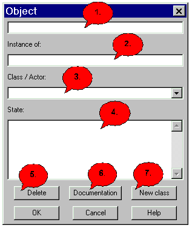

Object Dialog |
|
1. Enter the name of the object here. 2. After you selected the class the object belongs to you can see them here. 3. Here all possible classes or Use Cases (and/or Actor) are contained, by which your object can be produced. With one doubleclick the class in the preceding field (2.) appears. 4. 5. In order to remove the current object. If you pressed 'Del', you must click afterwards 'OK' in order to delete the object absolutely. 6. Here you come into the Docu-Dialog. 7. Here you can create a new class. 8. Here you leave the dialog and store the entered data. 9. To leave the dialog without storing click 'Cancel'. 10. Here you come into the dialogue help, in whom you are for the moment.
|
|
Back to the dialog overview |
|